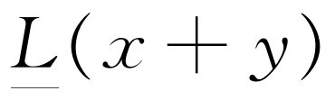
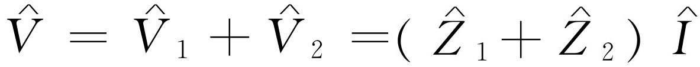
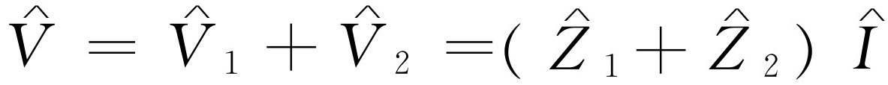

第25章 线性系统及其综述
§25-1 线性微分方程
在本章中我们将讨论振动系统的某些方面，它比我们曾在特定的振动系统中讨论过的更具有普遍性。我们已经解过的特殊系统的微分方程是
这种施加在变量x 上的特殊的“运算”组合有一个重要的性质，即如果用（x +y ）代替x ，则得出的是分别作用在x 上和y 上同样的运算之和；或者如果用a 乘x ，则得到的正好是a 乘原先的组合。这很容易证明。因为把式（25.1）中的所有字母都写出来很麻烦，我们将采用符号 作为一种“速写”记法。当我们看到这个符号，就知道它的意思是以x 代入后的式（25.1）的左边各项。按照这种书写方法， 的含义如下
（我们在L 下面加一短划是为了提醒我们，它不是一个普通函数。）我们有时称这是算符记法，但是把它叫做什么，这无关紧要，反正它仅仅是一种“速写”记法。
我们首先要说明的是
当然，这是由a （x +y ）=ax +ay ，d（x +y ）/dt =dx /dt +dy /dt 等事实得出的。
其次我们要说明的是，当a 为常数时
实际上，式（25.3）和（25.4）有着非常密切的关系，因为如果我们用（x +x ）代入式（25.3），这就与式（25.4）中令a =2相同，依此类推。
对于更复杂的问题，在 中可能有更多的导数和更多的项，我们所关心的问题是式（25.3）和式（25.4）是否仍然成立。如果它们成立，我们就称这类问题为线性 问题。在本章中我们将讨论线性系统所具有的一些性质，以了解我们在特殊方程的特殊分析中曾得出的某些结果所具有的普适性。
现在我们来研究线性微分方程的某些特性，这些特性我们曾在仔细研究特殊方程式（25.1）时说明过了。第一个有趣的性质是：假设我们需要解的是微分方程的某个瞬变态，即没有策动力的自由振动，也就是说我们需要解的是
假设我们用某种方法求出了一个特解，并称此解为x 1 ，也就是说，对于x 1 有 。现在，我们注意到ax 1 也是同一方程的一个解；也就是说我们能用任意常数去乘这个特解；并得到一个新的解。换句话说，如果我们有某一个一定“大小”的运动，那么它的两倍“大”的运动也是一个解。证明： 。
其次，假设用某种方法不仅求出了一个解x 1 ，还求出了另一个解x 2 （回忆一下，当我们代入x =ei αt 来求瞬变态时，我们求出了两个 α 的值，那就是x 1 和x 2 两个解），现在我们来证明组合（x 1 +x 2 ）也是一个解。换句话说，若令x =x 1 +x 2 ，x 也是方程的一个解。为什么？因为，如果 和 ，则 。因此，如果我们求出一个线性系统运动的几个解，我们可以把它们加在一起。
把这两个想法结合起来，显然我们可以把一个解的六倍加上另一个解的两倍，这也是解；因为如果x 1 是一个解，则αx 1 也是一个解。因此，这两个解的任何形式的和，如（αx 1 +βx 2 ）也是一个解。如果我们碰巧能够求出三个解，那么我们发现这三个解的任意组合也是一个解，如此等等。可以证明，对于振子问题，我们已经求得的称为独立解 [1] 的数目只有两个。在一般情况下，人们求得的独立解的数目与所谓自由度 有关。现在我们不准备详细讨论这个问题，但是，对于一个二阶微分方程，有两个独立解，这两个解我们都已经找到，因此我们有了最一般的解。
现在我们继续讨论另一个命题，它适用于有外力作用于系统时的情况。假设方程是
并假设我们已求出了它的一个特解。设乔的解是x J ，则L （x J ）=F （t ）。现在我们要求出另一个解；设想把自由方程式（25.5）的一个解，比如说x 1 加到乔的解上去，那么根据式（25.3），我们得到
因此，我们可以把任何“自由”解加到“受迫”解上去，这仍然是一个解。自由解称为瞬变态 解。
如果起先在一个系统上没有力的作用，然后突然加上作用力，我们不能立即得到以正弦波表示的稳定解，而是在一段时间内存在着瞬变态，但只要等待的时间足够长，瞬变态迟早总会消失。“受迫”解是不会消失的，因为它始终受力的作用。最后，经过了一段较长的时间后，解变成唯一的，但是在不同情况下初始运动是不同的，它取决于系统开始时如何运动。
§25-2 解的叠加
现在我们来讨论另一个有趣的命题。假设我们有一个特定的策动力F a （比如说是一个具有一定的频率ω =ω a 的振动，但我们的结论对F a 的任何函数形式都正确），并且我们已经解出这个受迫运动（具有或者没有瞬变态；这没有差别）。现在假定又有某一个其他的力作用着，比如说F b ，对F b 我们也解同样的问题，但只是对这一不同的力。再假定又来了一个人，他说：“我有一个新问题要你去解，我用的力是F a +F b 。”我们能解吗？当然，我们能，因为这个解就是分别取这两个力时的解x a 和x b 之和。这的确是一个非常值得注意的情况。如果用式（25.3），我们看出
这就是所谓线性系统叠加原理 的一个例子，它非常重要。其含义是：假如我们有一个复杂的力，它可以按任何方便的方式分解成几个分力之和，每个分力就某种意义而言都是简单的，也就是说，对于由复杂的力分解出的每一个特定的分力，我们都能解它的方程，这样得出的结果可用来解整个 力的方程，因为我们可以把各个分力的解简单地再加回到一起，就像整个力是由各个分力合成的一样（图25-1）。
我们再来举一个叠加原理的例子。在第12章中，我们讲过一条重要的电学规律：如果给定一组电荷q a 的某种分布，并算出由这些电荷在某一给定位置P处产生的电场 E a 。另一方面，假如还有一组电荷q b ，我们也算出了q b 在相应的位置所产生的电场 E b ，那么，如果这两组电荷分布同时存在，在P 点的电场 E 就是由第一组电荷产生的电场 E a 与另一组电荷产生的电场 E b 之和。换句话说，假如我们知道由一定的电荷所产生的场，那么由许多电荷产生的场只是各个电荷单独产生的场的矢量和。这与上述的命题完全相似：如果已知在某一时刻两个给定的力作用的结果，那么，倘若把一个力看成是这两个力之和，则合力产生的响应就是这两个分力产生的响应之和（图25-2）。
为什么这种情况在电学中也成立呢？原因在于确定电场的伟大的电学定律——麦克斯韦方程组事实上是线性 微分方程，也就是说，它们具有式（25.3）的性质。与力相应的是产生电场的电荷，由电荷来确定电场的方程是线性的。
作为这个命题的另一个有意义的例子，我们可以问，当所有的电台同时广播时，怎么有可能“调谐”到一个特定的电台。无线电台实质上发送的是一个频率非常高的作用在我们的无线电天线上的振荡电场。为了传送声音的信号，电场的振幅是变化的和经过调制的，这是真的。但它变化得很慢，我们不会去关心它。当我们听到：“本台以780 kHz的频率广播”，这表明电台天线发射的电场频率为每秒振动780 000次，正是这个电场驱动我们天线里的电子以同样的频率上下运动。如果同时在同一个城市里还有另一个电台以不同频率，比如说以每秒550 kHz广播，那么天线里的电子也被这个频率驱动。现在的问题是，我们怎么能够把来自780 kHz的电台的信号与来自550 kHz电台的信号分开？当然我们不能同时收听两个电台。
按叠加原理，收音机电路（它的第一部分是线性电路）对电场引起的作用力F a +F b 的响应是x a +x b 。因此，看上去好像我们永远不能把它们分开。实际上，正是叠加原理使得我们的系统不可避免 地要同时受到这两个信号的影响。但记住，对于共振 电路来说，响应曲线，即每单位F 的x 值与频率的关系如图25-3所示。如果电路的Q 值很高，响应将显示出一个非常尖锐的极大值。假设这两个电台强度可相比较，也就是说，这两个力的数量级相当，我们得到的响应 是x a 和x b 的和。但是，在图25-3中，x a 非常大，而x b 很小。因此，尽管两个信号强度相等，但当它们通过调谐到一个电台的发射频率ω a 的收音机的尖锐共振电路时，则这个电台的响应要比另一个电台强得多。因此，这两个信号所产生的整个响应几乎完全由ω a 构成，从而我们就选出了所需要的电台。
什么是调谐？怎样进行调谐呢？我们通过改变电路的L 或C 来改变ω 0 ，因为电路的频率与L 和C 的组合有关。特别是，大多数收音机做得使它的电容可以改变。我们调制收音机时，就是把刻度盘转到一个新的位置，而使电路的固有频率，比如说，移到ω c ，假如没有一个电台的频率是ω c ，那么在这种情况下，我们既不能听到这个电台，也不能听到那个电台，也就是没有声音。如果我们继续改变电容，直到共振曲线处在ω b 的位置，那么我们当然就收到了另一个电台。这就是收音机的调谐过程，也是叠加原理和共振响应共同在起作用 [2] 。
在结束这一部分讨论的时候，我们来定性地描述一下，如果给定的力相当复杂，那么在深入分析这个力的线性问题时会遇到什么情况。在许多可能采用的方法中，对解这类问题有两个特别有用的一般方法。一个是：假设我们能对一些特殊的已知力，如不同频率的正弦波求解。我们已知求解正弦波的问题如同“儿戏”一般容易。因此我们称此为“儿戏”的情况。现在的问题是能否把十分复杂的力表示成两个或多个“儿戏”式的力之和。在图25-1中，已有一条相当复杂的曲线，当然，如果我们加入更多的正弦波，可以使它变得更加复杂。因此，肯定可以得到非常复杂的曲线。反之亦然：实际上每一条曲线都可由无数 波长（或频率）不同的正弦波相加得出，而它们中间每个正弦波的解我们都已知道。我们只要知道有多少个正弦波构成这个已知力F ，则我们的答案x 就是相应的F 正弦波之和，其中每一个都要乘上x 对F 的有效比。这个解法叫作傅里叶变换，或傅里叶分析法。现在我们并不打算实际进行这种分析，只是想描述一下它所包含的想法。
下面是能解这类复杂问题的另一个非常有趣的方法。假设，经过冥思苦想以后，可以对一个特殊的名为冲力 的问题求解。力很快加上去，又很快去掉，就此结束。实际上，我们只要解强度为某个单位的冲力的问题，其他强度可以通过乘上一个适当因子而得出。我们知道对于冲力的响应x 是阻尼振动。那么我们又怎样来处理其他力，如像图25-4那样的力呢？
这种力可以比喻成一个铁锤的连续打击。开始时没有力，接着突然有一个稳定的力——冲力，冲力，冲力……然后停止。换句话说，我们可以把连续的力想象成是一连串紧靠在一起的冲力。现在，我们知道了一个冲力的结果，因而，整个一串冲力的结果将是整个一串阻尼振动：它将是第一个冲力的曲线，接着（稍晚一点）再加上第二个冲力的曲线，再加上第三个冲力的曲线，如此等等。因此，如果知道了一个冲力的答案，我们就能用数学表示出任意函数的完全的解。我们只要用积分，就能得出任何其他力的答案。这个方法称为格林函数法 。一个格林函数就是对一个冲力的响应，通过把各个冲力的响应放在一起来分析任何力的方法称为格林函数法。
这两个方法所包括的物理原理非常简单，仅涉及线性方程，因而很容易理解，但是它们所包含的数学问题 ，如复杂的积分等等，如果我们现在就学的话则显得太高深了一点。当你有了更多的数学实践之后，有朝一日你多半会再回到这个问题上来。但是，这个概念确实是非常简单的。
最后，对于线性系统 为什么如此重要我们再来作一些说明。答案很简单：因为我们能够解它们！因此，在绝大部分时间里我们解的都是线性问题。其次（也是最重要的），实际情况表明物理基本定律常常是线性的 。例如，电学规律的麦克斯韦方程组就是线性的。就我们所知，量子力学的伟大定律也是线性方程。这就是我们要花如此多的时间来研究线性方程的理由。因为，如果我们了解线性方程，原则上，就可了解许多事物。
我们再举另一个也是线性方程的情况。当位移很小时，很多函数都近似地 是线性的。例如，假如有一个单摆，它的运动的正确方程是
这个方程可以用椭圆函数求解，但是解它最容易的办法是用如在第9章讨论牛顿运动定律时用过的数值解法。一般说来，一个非线性方程除去 用数值方法外，没有别的方法可解。但当θ 很小时，sin θ 实际上等于θ ，这样，我们就得到一个线性方程。事实表明存在着很多这样的情况，当效应很小时显示出线性的性质：摆通过很小一段弧度的振动就是一个例子。再举一个例子，如果我们稍微拉一下弹簧，弹簧的力就和伸长成正比。如果拉得很厉害，把弹簧拉断了，这时的力是距离的完全不同的函数！线性方程很重要。事实上，它是如此重要，以致在物理和工程中大概有百分之五十的时间要花在解线性方程上。
§25-3 线性系统中的振动
现在我们来回顾一下前几章所讨论的内容。有关振子的物理内容很容易被数学弄得难以理解。实际上它的物理内容是很简单的。如果暂时忘记数学，我们将会看到，我们能理解在振动系统中所发生的几乎每一件事。首先，如果只有弹簧和重物，那么很容易理解这个系统为什么会振动——这是惯性的结果。我们把物体拉下来，弹力又把它向上拉回去，当它经过通常所处的位置——零点时，它不可能突然停下来，因为它具有动量，故要继续运动而向另一边摆动，从而不断来回振动。因此，如果没有摩擦力，无疑我们可以预见 到这个振动，事实上也确是这样。但是，如果有摩擦力存在，即便是一点点，那么在往回摆动的一周里，摆动就没有第一次那样高了。
像这样一周一周地下去，会出现什么情况呢？这与摩擦力的种类和大小有关。假设我们能够找出一种摩擦力，当振幅变化时，它总是和其他力——惯性和弹簧中的力——保持相同的比例。换句话说，对于较小的振动，这个摩擦力比作大振动时弱。通常的摩擦力并没有这种性质，因此，为了得到一种与速度成正比的理想的摩擦力，必须细心地找出一种特殊的摩擦——对于大振动，摩擦力强，对于小振动，摩擦力弱。如果我们恰好找到这种摩擦力，那么，除了一点点小的差别外，在每个相继循环的最后，系统所处的条件和开始时一样。所有的力都按同样的比例变小：弹力减小，惯性作用变低，因为加速度变弱，而由于我们精心的设计，摩擦力也变小了。当我们确实找到这种摩擦力后，我们将发现，每次振动，除了振幅减小外，和第一次振动完全一样。如果第一周振幅下降为开始时的90%，第二次振幅下降为开始时90%的90%，如此等等：在每周中振动的大小都减小了它本身的同样的百分比 。指数函数就是一个具有这样性质的曲线。在每一相同的时间间隔内，它改变同一个因子。也就是说，若相对于前一周，这一周的振幅为a ，则下一周的振幅是a 2 ，再下一周是a 3 。因此，振幅是某个常数的指数幂，其幂指数等于振动的周数
A =A 0 a n .（25.10）
当然n 正比于t ，因此，非常清楚，通解将是某种振动——sin ωt 或cos ωt ——乘上一个大致按b t 而变化的振幅。但是，如果b 是正值且小于1时，则b 可写成e-c 。因此，这就是为什么解看上去像e-ct cos ωt 的原因。这是很简单的。
如果摩擦不是像这样人为的，而是例如通常在桌子上的摩擦，则摩擦力是一个确定的常数，它与在每个半周内方向相反的振动的大小无关，这时会发生什么情况？此时，方程不再是线性的了，它变得很难求解，必须用第9章讲的数值方法，或者分别考虑每个半周才能求解。数值法是所有方法中最有效的方法，它能解任何方程。只有当遇到简单问题时，我们才能用数学分析法求解。
数学分析法并不如所说的那么富有成效，它只能解一些最简单的方程。只要方程稍微复杂一点，真正是一点点，就不能用分析方法求解。但是在本课程开始所介绍的数值方法，却能够应用于任何物理上感兴趣的方程。
其次，对共振曲线又如何呢？为什么有共振？我们先设想不存在摩擦时，一个物体本身振动的情况。假如单摆在摆动时，我们每次都在恰当的时候轻轻地推它一下，当然可以使它发生激烈运动。但是，如果我们闭上眼睛，不去看它，而在任意相等的时间间隔内轻轻地推它，将会发生什么情况？有时我们会发现，我们推得不是时候。当我们推得对头，并且每次推得都很适合时，那么，它就摆动得越来越高。因此，在没有摩擦力时，我们得出的曲线，其形状就像图25-5中对不同频率画出的实线。我们可以定性地理解共振曲线，但要求出曲线的准确的形状，大概就只好求助于数学了。当ω =ω 0 时，曲线趋于无穷大，这里ω 0 是振子的固有频率。
现在假设只有很小的摩擦，当振子的位移很小时，摩擦力对振子没有多大影响，除了在接近共振处外，其共振曲线是一样的。在接近共振时，振幅不是无限大，曲线只是上升到这么高，使得每次轻轻地推它所做的功足够补偿一周内摩擦力消耗的能量。因此，曲线的顶部是圆的——不会变得无穷大。摩擦力越大，曲线的顶部变得越圆。现在，有人可能会说：“我想曲线的宽度应与摩擦力有关。”这是因为通常画曲线时，总是画得使曲线的顶部作为一个单位。但是，如果把所有曲线都按同一尺度画出，则数学表达式就变得更易于理解；这时可以看出摩擦力使曲线顶部变低。当摩擦力较小时，在摩擦使运动停止之前，曲线已经达到比较尖细的部分，因此看上去比较窄。这就是说，曲线的峰值越高，在最大高度一半处的宽度也就越窄。
最后，我们考虑摩擦力很大的情况。事实表明，如果摩擦力过大，系统根本就振动不起来。弹簧的能量仅能使系统作克服摩擦力的运动，因此，系统慢慢地在平衡位置停下来。
§25-4 物理学中的类比
我们要说明的下一个问题是物体和弹簧不是唯一的线性系统，还有其他系统。特别是，还有称作线性电路的电学系统，我们发现它和力学系统完全类似。我们还没有严格研究过电路中每个元件为什么 会按照各自具有的方式起作用——现在没有必要去了解这些；我们只把它们的行为作为实验证明的事实而接受下来。
我们举一个最简单的情况作为例子。取一段金属线，它相当于一个电阻，我们在上面加一个电位差V 。电位差V 的含义是：如果把电荷q 从导线的一端移动到另一端，所做的功就是qV 。电位差越高，电荷从高电位的一端“跌落”到低电位的一端所做的功就越多。因此，电荷从一端运动到另一端时要释放能量。但是电荷不是简单地从一端直接飞到另一端，导线中的原子对电流有阻碍作用，对于几乎所有通常的物质来说，这种阻力遵循如下的规律：如果有电流I，这就是说，每秒钟有这么多的电荷跌落下去，则每秒钟通过导线跌落下去的数目与我们给它们的推力多大成正比例——换句话说，与电压的大小成正比
系数R 称为电阻 ，这个方程就叫欧姆定律。电阻的单位是欧姆，它等于每安培一伏。在力学中，要得出与速度成比例的这种摩擦力是很困难的，但在电学系统中却很容易，对于绝大多数金属来说，这个定律是极其精确的。
我们通常感兴趣的是，当电荷在导线里跌落下去时，每秒钟所做的功，功率耗损或电荷释放的能量有多少。当我们通过电压V 移动电荷q 时，所做的功就是qV ，因而每秒所做的功是V （dq /dt ），也就是VI 或IR ·I =I 2 R 。这叫热损失 ，根据能量守恒定律，这就是每秒钟在电阻上产生的热量。正是这种热量使普通的白炽灯泡发光。
当然，力学系统还有其他的重要性质，如质量（惯性），可以证明，惯性也有一个电学类比。我们可以制造某种称为电感器 的东西，它有一种性质叫电感 ，以致当电流一旦开始通过电感时，就不想停下来 。要改变电流就要有电压！如果电流不变，在电感上就没有电压。在直流电路上没有电感的概念，只有当电流改变时，电感的作用才显示出来，其方程为
电感的单位叫亨利 ，它的意思是，在1 H的电感上加1 V的电压将使电流产生1 A·s-1 的变化。如果你乐意的话，可以作如下的类比：V 相应于F ，L 相应于m ，I 相应于速度，这样方程式（25.12）就像是电学中的牛顿定律！由这两种系统得出的所有方程都具有相同的推导，因为在所有的方程中，我们可以把任何一个字母换成与它相应的字母，而得到同样的方程，我们推得的每一件事情在这两个系统中都具有对应性。
那么，电学中有什么东西与力学的弹簧（在弹簧中力与其伸长成比例）相对应呢？如果从F =kx 开始，并作如下代换：F →V 和x →q ，就得到V =αq ，事实证明确有此事，实际上，它是三个电路元件中我们能够真正理解的唯一的一个，因为我们曾研究过一对平行板，并发现如果在每块板上有一大小相等、符号相反的电荷时，它们之间的电场必与电荷的大小成正比。因此，使单位电荷穿过空隙从一块板移到另一块板上所做的功正好与板上电荷成正比。这个功就是电位差的定义 ，它是电场从一块板到另一块板的线积分。由于历史上的原因，结果比例常数不称作C ，而是1/C 。当然也可以把它叫作C ，但是没有这样做。因此有
电容C 的单位是法拉，在一法拉的电容器的每块板上有一库仑电荷时，就产生一伏特的电位差。
这就是我们的类比，如果直接作L →m ，q →x 等代换，就得到如下的相应于振荡电路的方程
因此，我们从式（25.14）学到的一切东西都能转而用于式（25.15），每个结果都相同，而且是如此地相同，以致我们能作出一项很出色的工作。
假设有一个相当复杂的力学系统，它并不仅仅是一个具有质量的物体悬挂在一根弹簧上，而是几个具有质量的物体悬挂在几根弹簧上，并且全都钩在一起。我们能做些什么呢？求解它？也许能，但是等一下，我们可以设计一个电路，使它具有与我们将要分析的事情相同的方程！比方说，如果我们要分析悬挂在一根弹簧上的物体，为什么我们不能建立一个电路，在这个电路中，使电感正比于质量，电阻正比于相应的mγ ，1/C正比于k ，而且都具有同样的比例呢？当然，这个电路将与我们的力学系统完全类似，这就是说，无论q 随V （V 与作用力相对应）如何变化，x 就随力这样变化！因此，如果有一个由大量彼此互相联结的部件组成的复杂力学系统，我们就可以把很多电阻，电感和电容彼此互相联结在一起以仿造 这个力学上很复杂的系统。这样做有什么好处？这两个问题的难易程度是完全相同的，因为它们完全等价。其优点并不在于找出一个电路之后，解数学方程 会变得稍为容易一些（尽管这是电气工程师采用的方法），而是考虑这种类比的真正原因在于电路容易建立 ，而且也容易改变 这个系统中的某些东西。
假如我们设计了一辆汽车，并想知道，当它走过某种崎岖不平的道路时，它要摇动多少次。可以建立一个电路，用电感代表轮子的惯性，电容代表轮子的弹性系数，电阻代表减震器，对汽车的其他部件也同样处理。现在需要一条崎岖不平的道路。好！我们从发电机那里引出一个电压 来代表某种路的崎岖不平，然后用测量某个电容器上的电荷来观察左轮的跳动。测量后（这是容易做到的）我们发现颠簸得太厉害了。是否需要增加或减少减振器？对于像汽车这类复杂的东西，我们是否真正要改变减振器，再重新做一遍呢？不！我们只需要转动标度盘，标度盘读数10对应于减震器数3，这样我们就增加了减震器。颠簸得更厉害了——没关系，那就减少一点试试看。颠簸还是厉害，我们改变弹簧的硬度（标度盘读数17），所有这一切都按电学方法 来调节，只要转动转盘。
这就叫模拟计算机 。这是一种通过构成另一个问题来模仿我们需要解的问题的装置，这另一个问题与我们要解的问题具有相同的方程式，但是，它是在自然界的另一种情况下得到的。它易于建立，易于测量，易于调节，也易于破坏。
§25-5 串联和并联阻抗
最后，还有一个并不完全属于复习性质的重要项目。这与具有一个以上的电路元件的电路有关。例如，当我们把一个电感器，电阻器和电容器像图24-2那样联接起来后，我们看到所有电荷都经过这三个元件中的每一个，因此在这个单独相联接的电路里导线各处的电流都相同。既然在每个元件的电流都一样，那么加在电阻R 上的电压是IR ，L 上的电压是L （dI /dt ），等等。因此，总的电压降是各部分之和，这就得出了式（25.15）。应用复数，我们能够解由正弦力引起的稳定态的运动方程。并且发现， 称为这个特定电路的阻抗 。它告诉我们，如果加上一个正弦电压 ，就得到一个电流 。
现在假设有一个由两部分组成的更复杂的电路，它们各有一定的阻抗
和 ，我们把它们串联起来［图25-6（a）］，并加上一个电压。此时，会发生什么情况呢？现在的问题要稍微复杂一些了，但是，如果
是流过
，我们把它们串联起来［图25-6（a）］，并加上一个电压。此时，会发生什么情况呢？现在的问题要稍微复杂一些了，但是，如果
是流过 的电流，那么加在
的电流，那么加在 上的电压是
；同样，加在
上的电压是
；同样，加在 上的电压是
。流过两者的电流相同
。因此，总电压是加在这两部分的电压之和，即
。这意味着加在整个电路上的电压可以写成
，这里串联电路的复合系统的
上的电压是
。流过两者的电流相同
。因此，总电压是加在这两部分的电压之和，即
。这意味着加在整个电路上的电压可以写成
，这里串联电路的复合系统的 是各部分
的和
是各部分
的和
这并不是唯一的联接方法，我们还可以用另一种称为并联的方法来联结［图25-6（b）］。我们看到，如果联接导线是理想导体，则加在其两端的给定电压就有效地作用于两个阻抗上，并在每个阻抗上独立地产生电流。因此，流过Z 1 的电流等于 。在 上的电流是 。这时电压相同 。对两端提供的总电流是这两部分电流之和： 。这可写成
因此
通过把电路分成一些小段，计算出每一小段的阻抗，再用上述法则把各个部分的电路一步一步联接起来，有时可使较复杂的电路简化。如果有某种电路，包含有很多用各种方式联接起来的阻抗，并用无阻抗的小发电机引入电压（当有电荷通过它时，发电机加上一个V ）时，那么可以用如下的原则：（1）在任何一个结点，流入结点的电流之和为零。也就是说，所有流进来的电流必须再流出去。（2）如果使电荷沿着一个回路运动，再回到开始时的位置，所做的净功等于零。这些法则称为电路的基尔霍夫定律 。对复杂的电路系统地应用这些定律常常可以简化对这种电路的分析。在这里，我们把这些定律与式（25.16）和式（25.17）并提，是因为你们在实验室工作中可能已经遇到过需要分析这种电路。以后我们还要更详细地讨论这些法则。